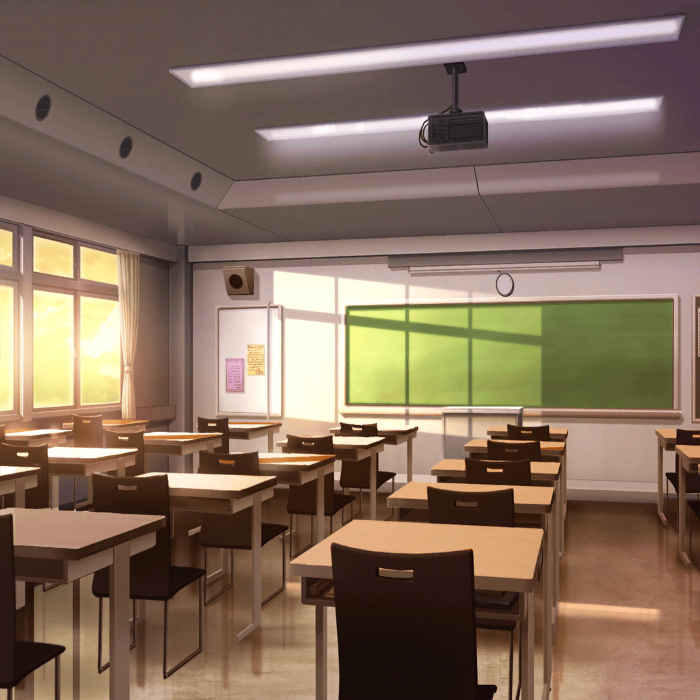

羽丘女子学園 1-B教室
つぐみ
でも……なんだか悔しいな
蘭
悔しいって、何が？
つぐみ
もしかしたら、みんなで考えたマンガが
雑誌に載るかもって思って、ワクワクしてたから……
つぐみ
もちろん、考えること自体も楽しかったんだよ！
でもどうせなら、応募くらいはしたかったなー……なんて
巴
んー……まあ、つぐの気持ちもわかるけどなー
ひまり
まさか、最後のアレを応募するわけにもいかないしね
蘭
うん。最後のは絶対にムリだと思う
ひまり
蘭、ハッキリ言いすぎ〜！
巴
あははっ
モカ
うんうん。つぐの気持ち、モカちゃんはよーくわかるよ〜。
でも残念ながら、それは最初から叶わぬ夢だったんだよね〜
つぐみ
え？ 最初から……？
モカ
実はこれねー、応募の締め切りが昨日なんだよー
つぐみ・蘭
えっ
ひまり
と、いうことは……
巴
そんなのありかよ〜！
モカ
だから、もしすばらしーい作品が完成したとしても
それを応募することはできなかったんだよねー
ひまり
できなかったんだよねー、じゃないでしょ！
なんで言わなかったの！？
巴
……っていうか、いつから気づいてたんだ？
モカ
んー、ひーちゃんの話聞いてるあたりー？
けど、なんか楽しいからいいかなーって思って〜
つぐみ
締め切り、締め切り……ほんとだ！
昨日の日付けが書いてある！
私、全然気が付かなかったよ……！
モカ
あたしとしては、つぐが
いつ気づくかなーって、ハラハラドキドキだったんだけどねー
ひまり
そんなドキドキいらないってば〜！
巴
あはは……そっかぁ。
じゃ、そんなに気構える必要もなかったってことか
モカ
トモちんてば、すっごく緊張しちゃってたもんね〜
巴
し、しかたないだろ！
応募するんなら、ちゃんとしたものにしなきゃって
思ってたんだから……！
ひまり
はぁ〜！ 締め切りすぎてるってわかったら、
急に疲れが……ぜーんぶモカのせいだからねー？
モカ
そんなー。
モカちゃんは良かれと思って続けたのにー
ひまり
そーれーでーもー！
モカ
ごめんってばー。お詫びに、モカちゃんセレクトの
超絶面白いマンガ貸してあげるから。
許して〜ひま神様〜
巴
おいおい、いくらひまりでもそんなんじゃ……
ひまり
うんっ！ なら許す！
けど、絶対おもしろいの貸してよね！
蘭
……いいみたい
巴
あ、あはは……だな
モカ
オッケーオッケー。
じゃ、ひーちゃんに貸して、そのあとつぐにも貸してあげるねー
つぐみ
えっ、私？
モカ
そー。モカちゃんの相方として、
次回の応募に向けて、しっかり勉強しといてもらわないとー
つぐみ
！ そっか、次があるんだ！
つぐみ
うんっ！ わかったよ、モカちゃん！
私、しっかり勉強するから……次こそはみんなで
面白いマンガを作ろうね！
蘭
……つぐみ
ひまり
つぐ、モカの冗談は真に受けちゃダメだってば
巴
ま、そっちのほうがつぐらしいけどな
つぐみ
えっ、じょ、冗談なの？ モカちゃん……！？
モカ
も〜ひどいよみんな〜。
モカちゃんは本気も本気、大マジなのに〜
巴
あははっ。
なあ、ところでさ
蘭・モカ・ひまり・つぐみ
？
巴
マンガの話作りはいいとして……絵は誰が描く予定だったんだ？
モカ・つぐみ
あっ
巴
『あっ』って、まさか２人とも、考えてなかったのか？
モカ
そこはほら、あれだよ〜。ね、蘭〜
蘭
いや、普通にムリだから
モカ
ですよね〜
つぐみ
あはは。お話に夢中で、全然考えてなかったよ……
つぐみ
で、でも今から練習すればきっと……！
モカ
――こうして、長く険しい漫画家への道を
歩みはじめた、つぐなのであった……
蘭
……モカ、それいつまで続けんの……？